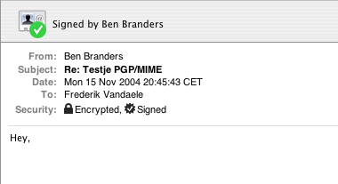

Email beveiligen met PGP
dinsdag 16 november 2004 | Nerdisme
Gisteren heb ik voor het eerst een PGP sleutel aangemaakt (bestaande uit een privé en een publiek gedeelte). Zo’n sleutel kan je gebruiken om emails of tekst te coderen en zodoende onleesbaar te maken voor de nieuwsgierige ogen van derden: een overijverige system administrator bij je provider, de politie, hackers, spyware of zelfs voor je eigen lief, mocht zoiets ooit nodig blijken.
Het verhaal van PGP (Pretty Good Privacy) is zeker niet nieuw. Een aantal mensen uit mijn adresboek bezitten hun sleutel al jaren. Waarom begin ik er nu pas aan? Twee redenen:
- Mijn UNIX lesjes van de voorbije week hebben mijn ogen geopend. Je wil echt niet weten wat je allemaal de wereld instuurt over een netwerk of het internet: paswoorden, email, ftp-gegevens… Het ligt allemaal — als pure leesbare tekst — te grabbel voor elke handige jongen met de gepaste tooltjes en commando’s.
- Een interessant inleidend artikel van Ben Branders in Open Magazine: “De noodzaak van versleutelen”. Het leek me wel wat en ik ben natuurlijk meteen op zoek gegaan naar een plugin voor Apple Mail.
Wellicht zal ik niet al te veel beveiligde of digitaal ondertekende emails de wereld insturen, al was het maar omdat sommige email programma’s het niet ondersteunen (ik moet niet verklappen welke zeker?). Toch is het een leuk gevoel te weten dat zoiets kan. Misschien moest ik maar eens een ondergedoken Al Qaeda lid opzoeken om pennevrienden te worden ;-)

Ben op 27 november 2004
Die ‘looks’ van AppleMail zien er wel goed uit zeg! En ik ben blij dat ik je heb kunnen overtuigen.
Ik gebruik het trouwens ook niet constant. Enkele persoonlijke mails gaan versleuteld over het net. Ondertekenen doe ik meestal wel, rekening houdende met de ontvanger natuurlijk…